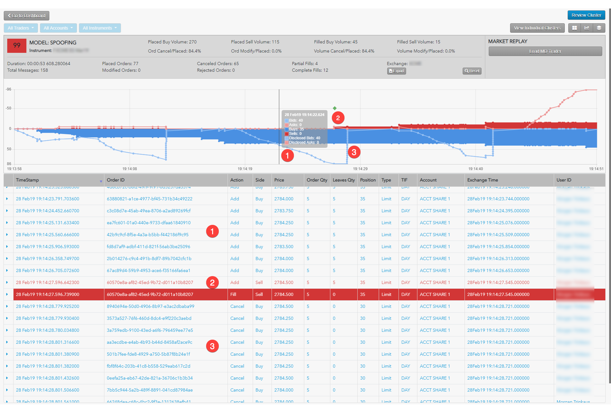
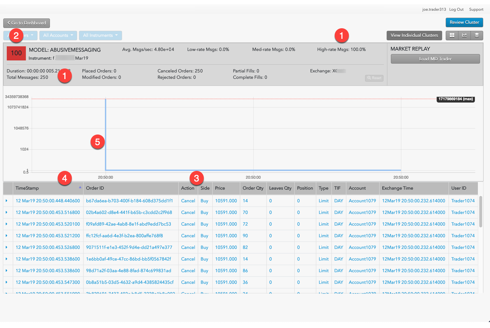
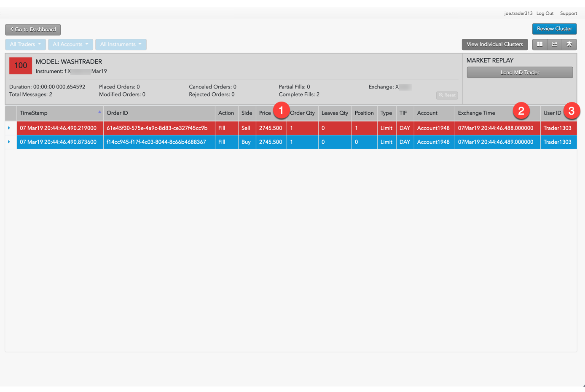

The method for reviewing clusters for problematic trading activities are unique to each type.
Use the Cluster Scorecard to get a closer look at the activity that triggered the spoofing score. The chart at the bottom of the scorecard can give you visual clues about the spoofing pattern. For example, the chart in the following scorecard for a cluster with a high spoofing score shows a potential flipping pattern.

The example shows the following:
The chart shows activity based on order volume over time, but does not show the order prices and liquidity. Looking at the prices for the potential spoofing orders can help you determine whether the trader was placing those orders far off the market in an attempt to deceive traders.
From the Cluster Scorecard, you can click Market Replay to show how the orders interacted with the market at the various price levels.
The market replay shows the following:
Use the Cluster Scorecard to get a closer look at the activity that triggered the abusive messaging score. The Cluster Statistics and Scorecard Metrics sections of the scorecard show the:
The chart at the bottom of the scorecard can give you visual clues about the abusive messaging pattern. For example, the chart in the following scorecard is for a cluster with a high percentage of high-rate messages over a very short time period.

Use the Cluster Scorecard to get a closer look at the activity that triggered the wash trading score. The Cluster Scorecard shows activity that could constitute a wash trade.

When investigating Momentum Ignition clusters with TT Score, you should focus on the:
For example, if the Igniter Price Levels and the Ignites (Vol) metrics display large values, this indicates that the trader may have been attempting to ignite a price movement in a particular direction (buy or sell) in order to mislead other market participants or to create an artificial price. The Opp. Side (Vol) is a good indicator of whether or not the trader received advantageous fills on orders opposite the igniter orders that the trader would not have otherwise received without intentionally or recklessly sparking the price movement.
The order audit trail data on the Statistics Scorecard can then be used to verify all of the order information and the timing of the activity that was identified as potential Momentum Ignition.
The activity can then also be replayed with the Market Replay on the Cluster Scorecard.
Use the Cluster Scorecard to get a closer look at the activity that triggered the pinging score, focusing on the audit trail: